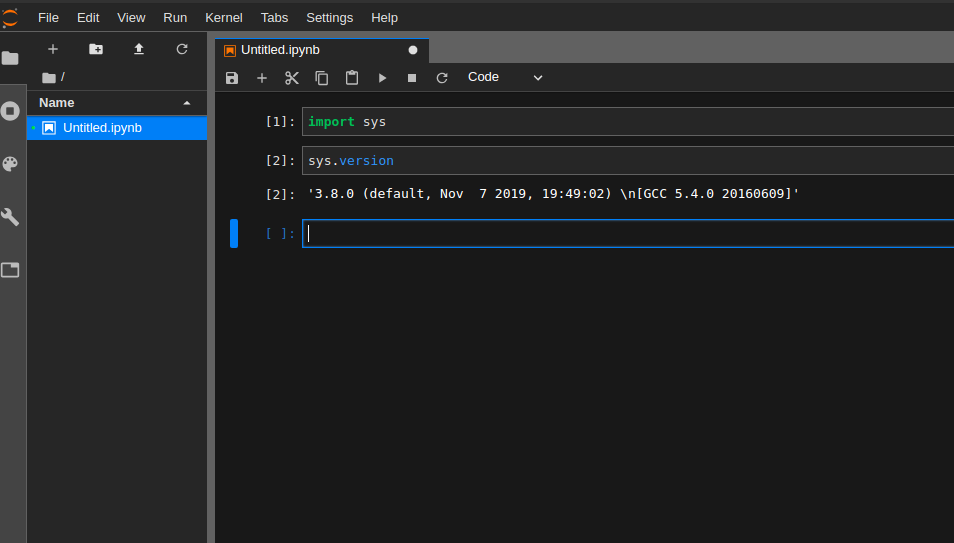

Setting up Python 3.8, Virtualenv and Jupyterlab on Ubuntu 16.04¶
Nov 11, 2019
I’m using Ubuntu 16.04 on this machine, so that’s what the steps of installation here will be for. But this installation shouldn’t largely vary on any distro that’s 14.04 and higher.
Step 1 - Download Python source code¶
Binary installations are available for Windows and Mac but you can either install Python3.8 on Ubuntu using “apt” or download and install from source. I did the latter. Obtain the gz file from here.
cd <path-of-archive>
tar zxvf Python-3.8.0.tgz
cd Python-3.8.0
./configure
make
sudo make altinstall
We use make altinstall instead of make install so that your existing Python configuration not be disturbed.
This process should likely complete in under a minute.
Confirm that it has successfully installed -
python3.8
(should return the IDLE prompt with Python version 3.8.0)
Step 2 - Install python3.8 specific virtualenv¶
There are a few differences in Python3.8 that prevent your existing virtualenv from being useful in creating a virtual environment supporting this version of Python. So install virtualenv corresponding to Python3.8.
sudo pip3.8 install virtualenv
This should likely be installed in /usr/local/bin/. So, confirm that it exists -
/usr/local/bin/virtualenv --version
(should return the latest version of virtualenv = 16.7.7 as of this writing)
Step 3 - Create a virtual environment¶
Use the installation of virtualenv created in Step 2 to create a virtual environment with the Python path pointed to python3.8 (-p). Preferably create a folder for all your virtual environments if you don’t have a preferred directory already.
cd
mkdir .virtual_environments
cd .virtual_environments
/usr/local/bin/virtualenv -p python3.8 <name of environment>
Example - /usr/local/bin/virtualenv -p python3.8 py38
Step 4 - Activate this environment and install jupyterlab in it.¶
cd to the folder where you created the virtual environment. Using the environment we created in Step 3 -
cd ~/.virtual_environments
source py38/bin/activate
pip list (You should see only a few packages in your new environment.)
pip install jupyterlab
Now you can traverse to the directory where you want your Jupyter-lab notebook to be spawned and trigger it using jupyter-lab and the default kernel (if you don’t have any other kernel installed) that will be picked up will be running Python3.8.
